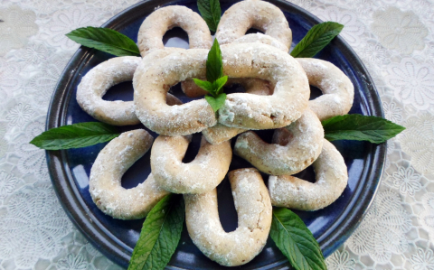

Hozzávalók
Elkészítés
Vissza a főmenübe
LINZER
Vanilis-dós patkó a kedvenc sütim!

Hozzávalók
300 g finomliszt
250 g vaj
100 g porcukor
150 g dió (darált)
0,5 csomag sütőpor
2 csomag vaníliás cukor
Elkészítése
A tészta minden alapanyagát egy tálba tesszük és összegyúrjuk.
Fóliába csomagoljuk és 30 percre hűtőbe tesszük, majd kivesszük a hűtőből és kisebb darabokat tépünk le a tésztából.
A kezünkkel kisodorjuk, kiflikké formájuk és sütőpapírral bélelt tepsibe tesszük.
180 fokos sütőben nagyjából 15 perc alatt megsütjük, majd vaníliás cukorral elkevert porcukorba forgatjuk.